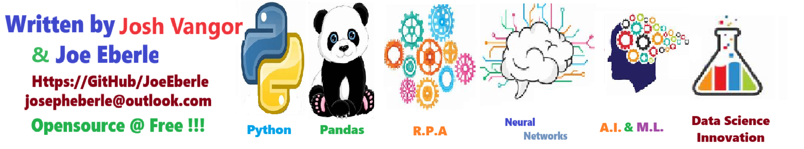
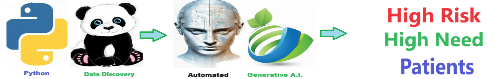

High Risk High Need
high_risk_high_need
Table of Contents
Overview of High Risk - High Need solution
Tracking high-risk, high-need patients is crucial for proactive healthcare management, as it allows healthcare providers to intervene early and prevent adverse health outcomes. Rapid notification of their doctors in the event of a medical emergency enables timely interventions, ensuring patients receive the critical care they need, potentially saving lives and improving overall health outcomes.
Enhancing Patient Care with High Risk High Need Patient Solutions
In the healthcare industry, efficiently managing patients with high risk and high needs is crucial for providing quality care and optimizing resources.
A high risk high need patient solution offers a data profiling method to identify such patients and assign them to the appropriate doctors.
This solution significantly enhances provider communication and patient triage, allowing healthcare enterprises to focus on patients with the highest needs or risks.
Enhanced Security and Privacy for Patients
- Using automated patient attribution helps ensure that patients are attributed to the write providers and that no sensitive patient information gets routed to the wrong doctors.
- The solution is "extensible" to check current providers Rosters, Validate providers NPI, and generate secure emails.
- Even the most diligent administrators can make manual mistakes - automation helps mitigate these manual entry risks .
Who Can Use High Risk High Need Patient Solutions?
- Healthcare Providers: Doctors, nurses, and care coordinators can use this solution to quickly identify and prioritize high-need patients, ensuring they receive timely and appropriate care.
- Healthcare Administrators: Administrators can leverage this tool to allocate resources more effectively, ensuring that high-risk patients are matched with the most suitable healthcare providers.
- Health Insurance Companies: Insurers can use the solution to monitor high-risk patients and coordinate care plans, potentially reducing overall healthcare costs through proactive management.
Advantages of Using High Risk High Need Patient Solutions
- Time Savings: Automating the identification and assignment process reduces the time spent on manual patient triage, allowing healthcare professionals to focus on providing care.
- Improved Patient Outcomes: By ensuring that high-risk patients are quickly assigned to the right doctors, this solution enhances the quality and timeliness of care, leading to better health outcomes.
- Efficient Resource Allocation: The solution helps administrators allocate medical resources more effectively, ensuring that high-need patients receive the attention they require without overburdening healthcare providers.
- Enhanced Communication: Facilitating better communication between providers through automated assignments improves coordination and continuity of care, reducing errors and improving patient satisfaction.
Return on Investment (ROI)
The implementation of a high risk high need patient solution can lead to significant ROI for healthcare enterprises. By automating patient identification and triage, the solution saves time and reduces administrative costs. Additionally, improved patient outcomes and efficient resource allocation contribute to overall cost savings and enhanced care quality.
Conclusion
In conclusion, a high risk high need patient solution is a valuable tool for healthcare providers and administrators. It streamlines the process of identifying and managing high-need patients, resulting in significant time savings, improved patient care, and efficient resource utilization.
Getting Started
The goal of this solution is to Jump Start your development and have you up and running in 30 minutes.
To get started with the High Risk High Need solution repository, follow these steps:
1. Clone the repository to your local machine.
2. Install the required dependencies listed at the top of the notebook.
3. Explore the example code provided in the repository and experiment.
4. Run the notebook and make it your own - EASY !
Solution Features
- Easy to understand and use
- Easily Configurable
- Quickly start your project with pre-built templates
- Its Fast and Automated
- Saves You Time
Code Features
These features are designed to provide everything you need for High Risk High Need
- Self Documenting - Automatically identifes major steps in notebook
- Self Testing - Unit Testing for each function
- Easily Configurable - Easily modify with config.INI - keyname value pairs
- Includes Talking Code - The code explains itself
- Self Logging - Enhanced python standard logging
- Self Debugging - Enhanced python standard debugging
- Low Code - or - No Code - Most solutions are under 50 lines of code
- Educational - Includes educational dialogue and background material
Github https://github.com/JoeEberle/ - Email josepheberle@outlook.com

